Unreal Mesh Render Pipeline Analysis
Unreal Engine Mesh Draw Pipeline

Render Path Overview
Entry Overview
Unreal Engine 5.2 中的渲染绘制的入口在 FViewPort::Draw()，调用堆栈如下图所示，Draw()函数由引擎的更新函数Tick()每帧调用。
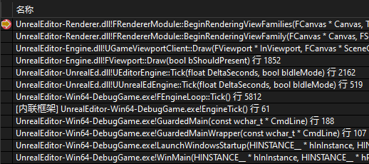
Draw()中会调用FRendererModule::BeginRenderingViewFamily(FRendererModule::BeginRenderingViewFamilies)，向渲染线程发送消息以开始渲染流程。
// Engine\Source\Runtime\Engine\Private\GameViewportClient.cpp
void UGameViewportClient::Draw(FViewport* InViewport, FCanvas* SceneCanvas)
{
...
GetRendererModule().BeginRenderingViewFamily(SceneCanvas, &ViewFamily);
...
}
FRendererModule::BeginRenderingViewFamilies中会入队在渲染线程执行的命令RenderViewFamilies_RenderThread，该方法会调用FDeferredShadingSceneRenderer::Render或FMobileSceneRenderer::Render开启场景的绘制。
// Engine\Source\Runtime\Renderer\Private\SceneRendering.cpp
void FRendererModule::BeginRenderingViewFamilies(FCanvas* Canvas, TArrayView<FSceneViewFamily*> ViewFamilies)
{
...
ENQUEUE_RENDER_COMMAND(FDrawSceneCommand)(
[LocalSceneRenderers = CopyTemp(SceneRenderers), DrawSceneEnqueue](FRHICommandListImmediate& RHICmdList)
{
uint64 SceneRenderStart = FPlatformTime::Cycles64();
const float StartDelayMillisec = FPlatformTime::ToMilliseconds64(SceneRenderStart - DrawSceneEnqueue);
CSV_CUSTOM_STAT_GLOBAL(DrawSceneCommand_StartDelay, StartDelayMillisec, ECsvCustomStatOp::Set);
RenderViewFamilies_RenderThread(RHICmdList, LocalSceneRenderers);
FlushPendingDeleteRHIResources_RenderThread();
});
...
}
static void RenderViewFamilies_RenderThread(FRHICommandListImmediate& RHICmdList, const TArray<FSceneRenderer*>& SceneRenderers)
{
...
// Render the scene.
SceneRenderer->Render(GraphBuilder);
...
}
我们主要关注延迟渲染管线，FDeferredShadingSceneRenderer::Render中调用FDeferredShadingSceneRenderer::BeginInitViews开始初始化场景的视图、检查可见性、构建可视网格绘制命令等，调用RenderXXXPass()以开始不同Pass的渲染。
Call Stack Analysis
下面我们从三个较为重要的 CallStack 入手进行分析
Call Stack1: Get MeshBatch
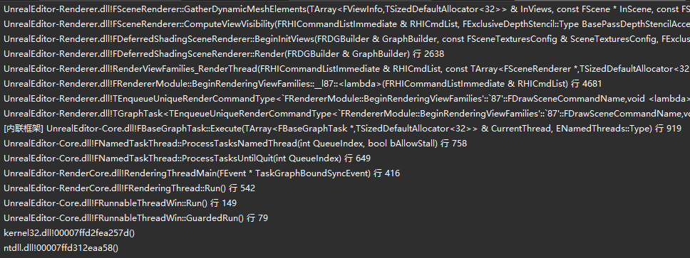
FSceneRenderer::GatherDynamicMeshElements在执行可见性检查FSceneRenderer::ComputeViewVisibility时被调用，其中的FPrimitiveSceneProxy::GetDynamicMeshElements是给每个图元对象向渲染器（收集器）添加可见图元元素的机会，由具体的子类实现，如FLineBatcherSceneProxy, FStaticMeshSceneProxy,FSkeletalMeshSceneProxy等。
Engine\Source\Runtime\Renderer\Private\SceneVisibility.cpp
void FSceneRenderer::GatherDynamicMeshElements(
TArray<FViewInfo>& InViews,
const FScene* InScene,
const FSceneViewFamily& InViewFamily,
FGlobalDynamicIndexBuffer& DynamicIndexBuffer,
FGlobalDynamicVertexBuffer& DynamicVertexBuffer,
FGlobalDynamicReadBuffer& DynamicReadBuffer,
const FPrimitiveViewMasks& HasDynamicMeshElementsMasks,
const FPrimitiveViewMasks& HasDynamicEditorMeshElementsMasks,
FMeshElementCollector& Collector)
{
...
for (int32 PrimitiveIndex = 0; PrimitiveIndex < NumPrimitives; ++PrimitiveIndex)
{
const uint8 ViewMask = HasDynamicMeshElementsMasks[PrimitiveIndex];
if (ViewMask != 0)
{
...
Collector.SetPrimitive(PrimitiveSceneInfo->Proxy, PrimitiveSceneInfo->DefaultDynamicHitProxyId);
PrimitiveSceneInfo->Proxy->GetDynamicMeshElements(InViewFamily.Views, InViewFamily, ViewMaskFinal, Collector);
...
}
}
...
}
以FStaticMeshSceneProxy为例，会根据不同的LOD索引，为每个Section网格添加一个FMeshBatch，然后将FMeshBatch加入到FMeshElementCollector
Engine\Source\Runtime\Engine\Private\StaticMeshRender.cpp
void FStaticMeshSceneProxy::GetDynamicMeshElements(const TArray<const FSceneView*>& Views, const FSceneViewFamily& ViewFamily, uint32 VisibilityMap, FMeshElementCollector& Collector) const
{
...
for (int32 BatchIndex = 0; BatchIndex < NumBatches; BatchIndex++)
{
// GetWireframeMeshElement will try SetIndexSource at section index 0
// and GetMeshElement loops over sections, therefore does not have this issue
if (LODModel.Sections.Num() > 0)
{
FMeshBatch &Mesh = Collector.AllocateMesh();
...
Collector.AddMesh(ViewIndex, MeshElement);
...
}
}
...
}
Call Stack2: Build MeshDrawCommand

FSceneRenderer::ComputeViewVisibility中除了FSceneRenderer::GatherDynamicMeshElements外还有一个关键的函数FSceneRenderer::SetupMeshPass，这个函数会遍历所有Pass的类型，创建对应的FMeshPassProcessor，再调用FParallelMeshDrawCommandPass::DispatchPassSetup开始该Pass的创建与MeshDrawCommand的构建。
// Engine\Source\Runtime\Renderer\Private\SceneRendering.cpp
void FSceneRenderer::SetupMeshPass(FViewInfo& View, FExclusiveDepthStencil::Type BasePassDepthStencilAccess, FViewCommands& ViewCommands, FInstanceCullingManager& InstanceCullingManager)
{
...
FMeshPassProcessor* MeshPassProcessor = FPassProcessorManager::CreateMeshPassProcessor(ShadingPath, PassType, Scene->GetFeatureLevel(), Scene, &View, nullptr);
FParallelMeshDrawCommandPass& Pass = View.ParallelMeshDrawCommandPasses[PassIndex];
...
Pass.DispatchPassSetup(
Scene,
View,
FInstanceCullingContext(FeatureLevel, &InstanceCullingManager, ViewIds, View.PrevViewInfo.HZB, InstanceCullingMode, CullingFlags),
PassType,
BasePassDepthStencilAccess,
MeshPassProcessor,
View.DynamicMeshElements,
&View.DynamicMeshElementsPassRelevance,
View.NumVisibleDynamicMeshElements[PassType],
ViewCommands.DynamicMeshCommandBuildRequests[PassType],
ViewCommands.NumDynamicMeshCommandBuildRequestElements[PassType],
ViewCommands.MeshCommands[PassIndex]);
...
}
FParallelMeshDrawCommandPass::DispatchPassSetup中先收集Pass相关的信息到TaskContext中，再调用FMeshDrawCommandPassSetupTask::AnyThreadTask创建任务和FMeshDrawCommandInitResourcesTask::AnyThreadTask初始化资源。
// Engine\Source\Runtime\Renderer\Private\MeshDrawCommands.cpp
void FParallelMeshDrawCommandPass::DispatchPassSetup(
FScene* Scene,
const FViewInfo& View,
FInstanceCullingContext&& InstanceCullingContext,
EMeshPass::Type PassType,
FExclusiveDepthStencil::Type BasePassDepthStencilAccess,
FMeshPassProcessor* MeshPassProcessor,
const TArray<FMeshBatchAndRelevance, SceneRenderingAllocator>& DynamicMeshElements,
const TArray<FMeshPassMask, SceneRenderingAllocator>* DynamicMeshElementsPassRelevance,
int32 NumDynamicMeshElements,
TArray<const FStaticMeshBatch*, SceneRenderingAllocator>& InOutDynamicMeshCommandBuildRequests,
int32 NumDynamicMeshCommandBuildRequestElements,
FMeshCommandOneFrameArray& InOutMeshDrawCommands,
FMeshPassProcessor* MobileBasePassCSMMeshPassProcessor,
FMeshCommandOneFrameArray* InOutMobileBasePassCSMMeshDrawCommands
)
{
...
if (bExecuteInParallel)
{
if (IsOnDemandShaderCreationEnabled())
{
TaskEventRef = TGraphTask<FMeshDrawCommandPassSetupTask>::CreateTask(nullptr, ENamedThreads::GetRenderThread()).ConstructAndDispatchWhenReady(TaskContext);
}
else
{
FGraphEventArray DependentGraphEvents;
DependentGraphEvents.Add(TGraphTask<FMeshDrawCommandPassSetupTask>::CreateTask(nullptr, ENamedThreads::GetRenderThread()).ConstructAndDispatchWhenReady(TaskContext));
TaskEventRef = TGraphTask<FMeshDrawCommandInitResourcesTask>::CreateTask(&DependentGraphEvents, ENamedThreads::GetRenderThread()).ConstructAndDispatchWhenReady(TaskContext);
}
}
else
{
QUICK_SCOPE_CYCLE_COUNTER(STAT_MeshPassSetupImmediate);
FMeshDrawCommandPassSetupTask Task(TaskContext);
Task.AnyThreadTask();
if (!IsOnDemandShaderCreationEnabled())
{
FMeshDrawCommandInitResourcesTask DependentTask(TaskContext);
DependentTask.AnyThreadTask();
}
}
...
}
GenerateDynamicMeshDrawCommands将会转换指定EMeshPass中的每个FMeshBatch到一组FMeshDrawCommand，其中既会处理动态网格批次DynamicMeshBatches也会处理静态网格批次StaticMeshBatches，DynamicMeshCommandBuildRequests的数量即NumDynamicMeshCommandBuildRequestElements，代表StaticMeshBatches的数量。
AddMeshBatch为开始将该FMeshBatch转换成FMeshDrawCommand的入口。
// Engine\Source\Runtime\Renderer\Private\MeshDrawCommands.cpp
void GenerateDynamicMeshDrawCommands(
const FViewInfo& View,
EShadingPath ShadingPath,
EMeshPass::Type PassType,
FMeshPassProcessor* PassMeshProcessor,
const TArray<FMeshBatchAndRelevance, SceneRenderingAllocator>& DynamicMeshElements,
const TArray<FMeshPassMask, SceneRenderingAllocator>* DynamicMeshElementsPassRelevance,
int32 MaxNumDynamicMeshElements,
const TArray<const FStaticMeshBatch*, SceneRenderingAllocator>& DynamicMeshCommandBuildRequests,
int32 MaxNumBuildRequestElements,
FMeshCommandOneFrameArray& VisibleCommands,
FDynamicMeshDrawCommandStorage& MeshDrawCommandStorage,
FGraphicsMinimalPipelineStateSet& MinimalPipelineStatePassSet,
bool& NeedsShaderInitialisation
)
{
...
{
const int32 NumCommandsBefore = VisibleCommands.Num();
const int32 NumDynamicMeshBatches = DynamicMeshElements.Num();
for (int32 MeshIndex = 0; MeshIndex < NumDynamicMeshBatches; MeshIndex++)
{
if (!DynamicMeshElementsPassRelevance || (*DynamicMeshElementsPassRelevance)[MeshIndex].Get(PassType))
{
const FMeshBatchAndRelevance& MeshAndRelevance = DynamicMeshElements[MeshIndex];
const uint64 BatchElementMask = ~0ull;
PassMeshProcessor->AddMeshBatch(*MeshAndRelevance.Mesh, BatchElementMask, MeshAndRelevance.PrimitiveSceneProxy);
}
}
const int32 NumCommandsGenerated = VisibleCommands.Num() - NumCommandsBefore;
checkf(NumCommandsGenerated <= MaxNumDynamicMeshElements,
TEXT("Generated %d mesh draw commands for DynamicMeshElements, while preallocating resources only for %d of them."), NumCommandsGenerated, MaxNumDynamicMeshElements);
}
...
{
const int32 NumCommandsBefore = VisibleCommands.Num();
const int32 NumStaticMeshBatches = DynamicMeshCommandBuildRequests.Num();
for (int32 MeshIndex = 0; MeshIndex < NumStaticMeshBatches; MeshIndex++)
{
const FStaticMeshBatch* StaticMeshBatch = DynamicMeshCommandBuildRequests[MeshIndex];
const uint64 DefaultBatchElementMask = ~0ul;
PassMeshProcessor->AddMeshBatch(*StaticMeshBatch, DefaultBatchElementMask, StaticMeshBatch->PrimitiveSceneInfo->Proxy, StaticMeshBatch->Id);
}
const int32 NumCommandsGenerated = VisibleCommands.Num() - NumCommandsBefore;
checkf(NumCommandsGenerated <= MaxNumBuildRequestElements,
TEXT("Generated %d mesh draw commands for DynamicMeshCommandBuildRequests, while preallocating resources only for %d of them."), NumCommandsGenerated, MaxNumBuildRequestElements);
}
...
}
FMeshPassProcessor::BuildMeshDrawCommands中会创建FMeshDrawCommand并填充信息，然后将其添加到DrawListContext中，最后再执行FinalizeCommand完成MeshDrawCommands的构建。
以FDynamicPassMeshDrawListContext为例，FDynamicPassMeshDrawListContext::FinalizeCommand中使用传入的FMeshDrawCommand创建FVisibleMeshDrawCommand并添加到FMeshProcessor的DrawList中， DrawList的类型是FMeshCommandOneFrameArray，FMeshCommandOneFrameArray的定义如下：
typedef TArray<FVisibleMeshDrawCommand, SceneRenderingAllocator> FMeshCommandOneFrameArray;
// Engine\Source\Runtime\Renderer\Public\MeshPassProcessor.h
virtual void FinalizeCommand(
const FMeshBatch& MeshBatch,
int32 BatchElementIndex,
const FMeshDrawCommandPrimitiveIdInfo &IdInfo,
ERasterizerFillMode MeshFillMode,
ERasterizerCullMode MeshCullMode,
FMeshDrawCommandSortKey SortKey,
EFVisibleMeshDrawCommandFlags Flags,
const FGraphicsMinimalPipelineStateInitializer& PipelineState,
const FMeshProcessorShaders* ShadersForDebugging,
FMeshDrawCommand& MeshDrawCommand) override final
{
FGraphicsMinimalPipelineStateId PipelineId = FGraphicsMinimalPipelineStateId::GetPipelineStateId(PipelineState, GraphicsMinimalPipelineStateSet, NeedsShaderInitialisation);
MeshDrawCommand.SetDrawParametersAndFinalize(MeshBatch, BatchElementIndex, PipelineId, ShadersForDebugging);
FVisibleMeshDrawCommand NewVisibleMeshDrawCommand;
//@todo MeshCommandPipeline - assign usable state ID for dynamic path draws
// Currently dynamic path draws will not get dynamic instancing, but they will be roughly sorted by state
const FMeshBatchElement& MeshBatchElement = MeshBatch.Elements[BatchElementIndex];
NewVisibleMeshDrawCommand.Setup(&MeshDrawCommand, IdInfo, -1, MeshFillMode, MeshCullMode, Flags, SortKey,
MeshBatchElement.bIsInstanceRuns ? MeshBatchElement.InstanceRuns : nullptr,
MeshBatchElement.bIsInstanceRuns ? MeshBatchElement.NumInstances : 0
);
DrawList.Add(NewVisibleMeshDrawCommand);
}
Call Stack3: Submit RHICommand

在可见性测试后便是渲染的环节，FDeferredShadingSceneRenderer为不同的pass实现了不同的渲染函数并命名为RenderXXXPass(XXX:Pass Name)，执行绘制的入口是该pass对应的ParallelMeshDrawCommandPasses的DispatchDraw方法，以prePass为例，在RenderPrePass函数中，绘制的入口以及pass参数先被加入RDG进行资源的处理，再异步地（由RDG决定顺序）以Lambda函数方式被调用。
// DepthRendering.cpp
void FDeferredShadingSceneRenderer::RenderPrePass(FRDGBuilder& GraphBuilder, FRDGTextureRef SceneDepthTexture, FInstanceCullingManager& InstanceCullingManager)
{
...
GraphBuilder.AddPass(
RDG_EVENT_NAME("DepthPassParallel"),
PassParameters,
ERDGPassFlags::Raster | ERDGPassFlags::SkipRenderPass,
[this, &View, PassParameters](const FRDGPass* InPass, FRHICommandListImmediate& RHICmdList)
{
FRDGParallelCommandListSet ParallelCommandListSet(InPass, RHICmdList, GET_STATID(STAT_CLP_Prepass), *this, View, FParallelCommandListBindings(PassParameters));
ParallelCommandListSet.SetHighPriority();
View.ParallelMeshDrawCommandPasses[EMeshPass::DepthPass].DispatchDraw(&ParallelCommandListSet, RHICmdList, &PassParameters->InstanceCullingDrawParams);
});
...
}
FDrawVisibleMeshCommandAnyThreadTask执行的绘制指令单个MeshDrawCommand的绘制命令的创建的调用堆栈如下，绘制的任务并不是立即执行的，而是由RDG的Execute()发起执行。

// MeshPassProcessor.cpp
void FMeshDrawCommand::SubmitDrawEnd(const FMeshDrawCommand& MeshDrawCommand, uint32 InstanceFactor, FRHICommandList& RHICmdList,
FRHIBuffer* IndirectArgsOverrideBuffer,
uint32 IndirectArgsOverrideByteOffset)
{
RHICmdList.DrawIndexedPrimitive(
MeshDrawCommand.IndexBuffer,
MeshDrawCommand.VertexParams.BaseVertexIndex,
0,
MeshDrawCommand.VertexParams.NumVertices,
MeshDrawCommand.FirstIndex,
MeshDrawCommand.NumPrimitives,
MeshDrawCommand.NumInstances * InstanceFactor
);
}
DrawIndexedPrimitive在ByPass情况下会直接调用的方法RHIDrawIndexedPrimitive由不同图形驱动的RHI实现，实测在windows下只有在FD3D12对应的RHI中打断点才会生效，并没有使用到其他图形驱动的RHI。
RHICommandList.h

以OpenGL为例，该方法会直接调用OpenGL的绘制方法如glDrawElementsInstanced和glDrawElements等进行绘制。
// OpenGLCommands.cpp
void FOpenGLDynamicRHI::RHIDrawIndexedPrimitive(FRHIBuffer* IndexBufferRHI, int32 BaseVertexIndex, uint32 FirstInstance, uint32 NumVertices, uint32 StartIndex, uint32 NumPrimitives, uint32 NumInstances)
{
...
FOpenGL::DrawElementsInstanced(DrawMode, NumElements, IndexType, INDEX_TO_VOID(StartIndex), NumInstances);
/*
OpenGL3.h
static FORCEINLINE void DrawElementsInstanced(GLenum Mode, GLsizei Count, GLenum Type, const GLvoid* Indices, GLsizei InstanceCount)
{
glDrawElementsInstanced(Mode, Count, Type, Indices, InstanceCount);
}
*/
...
glDrawElements(DrawMode, NumElements, IndexType, INDEX_TO_VOID(StartIndex));
...
}
Example: PrePass (Depth Pass)
Scene Overview
1 Cube + 1 DirectionalLight
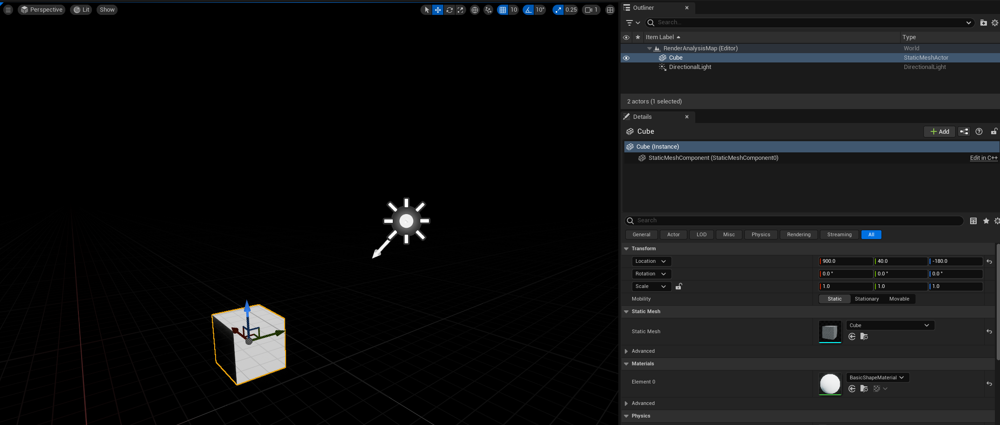
CVars (Console Variables) at Engine\Config\ConsoleVariables.ini
虚幻的绘制数据分两类，一类是Dynamic一类是Static，不同的绘制数据的绘制路径是不一样的。Static数据是预生成的，将被保存在CachedMeshDrawCommandStateBuckets里，Dynamic的MeshDrawCommand是每帧重新生成的。按照下图设置cvars以后每帧都会重新生成MeshDrawCommand，方便分析。

Cube相关信息截帧
几何信息
在编辑器界面查看Cube的几何信息如下，其中共有一个LOD0、48Triangles和54Vertices等。
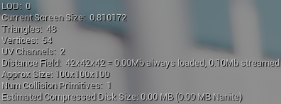
场景信息
游戏线程在FRendererModule::BeginRenderingViewFamily中初始化渲染线程的场景渲染器FSceneRenderer，然后在渲染线程执行的方法RenderViewFamilies_RenderThread中调用FSceneRenderer的Render()方法进行渲染。
在渲染线程遍历SceneRenders执行实际的渲染函数Render()前打断点截帧，查看Scene里的Primitives信息，Primitives里的元素实际上是FPrimitiveSceneInfo。
SceneRendering.cpp

场景中共有五个Primitives。

从Primitives的Proxy的ResourceName和OwnerName中可以看出第一个primitive对应的是Cube，第二个是Sphere代表的DefaultPawn，剩下三个是LineBatchComponent。
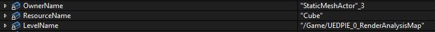

静态绘制路径，缓存MeshBatch
静态绘制路径通常可以被缓存，所以也叫缓存绘制路径，适用的对象可以是静态模型（可在UE编辑器的网格属性面板中指定，见下图）。

静态模型在加入场景后，其对应的FPrimitiveSceneInfo在调用AddStaticMeshes时，被执行缓存处理，调用堆栈如下所示。AddStaticMeshes中会添加静态网格元素到场景的静态网格列表，也会缓存静态的MeshDrawCommand（如果开启了缓存）。
我们添加且只添加一个静态的Cube到场景。打断点可以发现在执行完AddStaticMeshes后，场景中的StaticMeshes已经有了4个元素，其中第0个和第1个就是我们添加的Cube的FStaticMeshBatch，他们的PrimitiveSceneInfo是一样的。
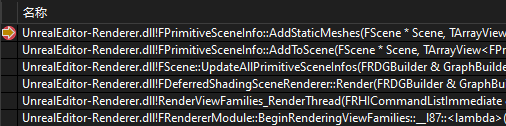
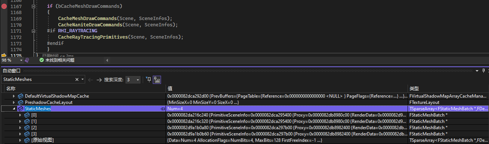
可视性与相关性检测
SceneVisibility.cpp里的FsceneRender::ComputeViewVisibility中执行各种剔除与可视性检测，然后在FSceneRenderer::SetupMeshPass中遍历各个pass生成drawcommand。在构建最后的绘制列表之前需要把不需要的MeshDrawCommand剔除掉，UE有多种剔除算法，可见性剔除，视锥体剔除等。最后会构建一个View.PrimitiveVisibilityMap。这个VisibilityMap会把没用的MeshDrawCommand丢掉，让它无法进入最后的渲染队列里。
在进行剔除与可视性检测后的VisibilityMap中可以看到，Cube的可见性标志位为1（可见），Pawn的Sphere的可见性标志位为0（不可见）。
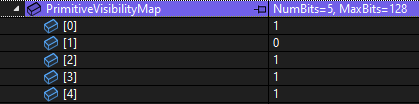
在FsceneRender::ComputeViewVisibility中还会进行相关性(Relevance)的检测，我们加入场景的Cube是静态物体，场景中已经缓存了它的MeshBatch，但是由于没有缓存它的MeshDrawCommand所以每帧都要重新生成这个静态MeshBatch的MeshDrawCommand。
在ComputeAndMarkRelevanceForViewParallel中会计算相关性并且填充FViewCommands中的NumDynamicMeshCommandBuildRequestElements等信息，这个对应的就是需要构建MeshDrawCommand的静态FMeshBatch的数量，如下图断点所示，在经过相关性计算后，第一个Pass和第二个Pass对应的NumDynamicMeshCommandBuildRequestElements被填充为1，代表该Pass中有一个静态物体生成的FMeshBatch需要构建成MeshDrawCommand。

设置MeshPass与构建MeshDrawCommand
在FSceneRenderer::SetupMeshPass中打断点调试可以看到ParallelMeshDrawCommandPasses中的各个Pass的信息被逐个填充，其成员变量TaskContext里有该Pass对应的MeshDrawCommand信息
SceneRendering.cpp
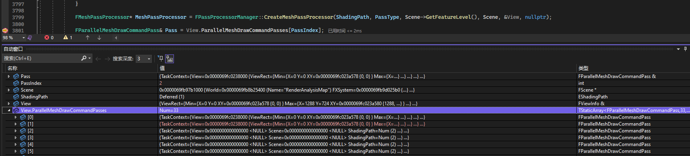
在GenerateDynamicMeshDrawCommands中打断点截帧可以发现，在PrePass构建过程中，没有DynamicMeshBatch，有且只有一个StaticMeshBatch，而且根据其PrimitiveSceneInfo可以确定这个MeshBatch对应的是Cube。
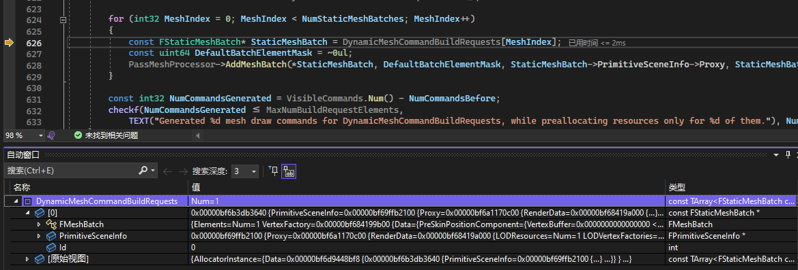
FDepthMeshProcessor::AddMeshBatch会继续调用直到BuildMeshDrawCommand，打断点截帧进行分析，此时的堆栈如下，可以看到堆栈走的是DepthPass的路径。
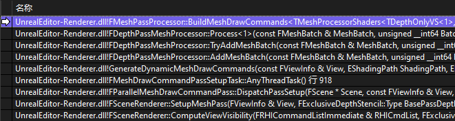
BuildMeshDrawCommand中创建了FMeshDrawCommand并将其添加到DrawListStorage，如下图断点所示，在执行AddCommand之前，此时的DrawListStorage是空的。

在执行完AddCommand和FinalizeCommand之后，DepthPass的MeshProcessor中就有了Cube对应的FMeshBatch所生成的FMeshDrawCommand的信息。最终生成的FMeshDrawCommand的信息主要有着色器绑定(ShaderBindings)、顶点流(VertexStreams)、索引缓冲(IndexBuffer)、PSO管线ID(CachedPipelineId)、绘制参数(FirstIndex、NumPrimitive、NumInstances)等。可以看到其中的信息可以和Cube的几何信息相对应。
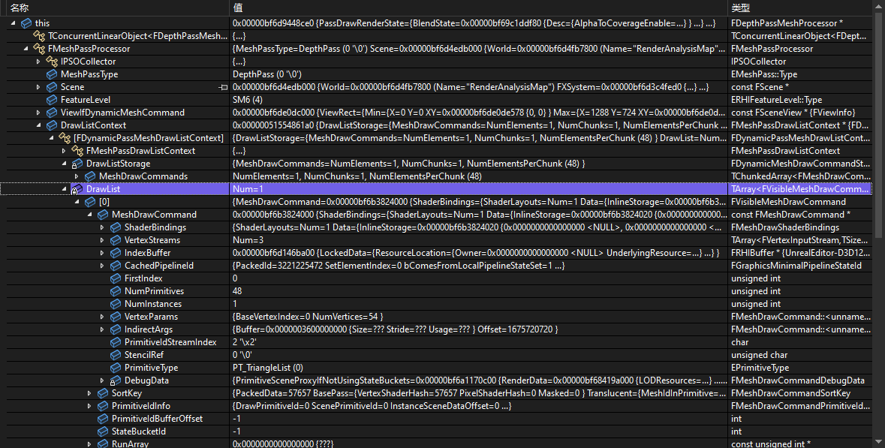
设置RHICommandList与提交绘制命令
FMeshDrawCommand::SubmitDraw中
The Entire Scene
Footnotes
FMeshBatchElement
FMeshBatchElement里面储存了单个网格所需的数据，如IndexBuffer，shaderParameters等
FMeshBatch
FMeshBatch包含了一个pass的所需要的全部渲染数据，它会维护一个FMeshBatchElement列表，FMeshBatchElement包含了单个网格绘制所需的数据，包括UniformBuffer、IndexBuffer等等。事实上，最后一个FMeshBatchElement就对应了一次DrawCall
FMeshBatch解耦了Pass和FPrimitiveSceneProxy，包含了绘制pass所需信息
他拥有一组FmeshBatchElement（但绝大多数情况下只用一个，除了FInstancedStaticMeshSceneProxy和FHierarchicalStaticMeshSceneProxy中的接口会对数组作填充，其余情况都只用到一个FMeshBatchElement），他们共享相同材质的vertexFactory
FMeshElementCollector
FMeshElementCollector 由 FSceneRenderer 创建且一一对应。
收集器收集完对应view的可见图元列表后，通常拥有一组需要渲染的FMeshBatch列表，以及它们的管理数据和状态，为后续的流程收集和准备足够的准备。
此外，FMeshElementCollector在收集完网格数据后，还可以指定需要等待处理的任务列表，以实现多线程并行处理的同步。
GetDynamicMeshElements() & GetDynamicElementsSection()
void FSceneRenderer::GatherDynamicMeshElements(){
PrimitiveSceneInfo->Proxy->GetDynamicMeshElements();
}
是给每个图元对象向渲染器（收集器）添加可见图元元素的机会，由具体的子类实现，如 FSkeletalMeshSceneProxy
FSkeletalMeshSceneProxy会根据不同的LOD索引，给每个Section网格添加一个FMeshBatch。
ParallelMeshDrawCommandPasses
void FParallelMeshDrawCommandPass::DispatchPassSetup()
{
... 先收集 TaskContext 信息 ...
FMeshDrawCommandPassSetupTask::AnyThreadTask() 使用 TaskContext 信息生成绘制指令、写入数据
FMeshDrawCommandInitResourcesTask::AnyThreadTask() 使用 TaskContext 信息初始化绘制资源
}
FMeshDrawCommandPassSetupTaskContext
收集FMeshDrawCommandPassSetupTask需要的信息
FMeshDrawCommandPassSetupTask
在FMeshDrawCommandPassSetupTask中进行绘制指令生成与相关数据的写入
FMeshPassProcessor & AddMeshBatch() & TryAddMeshBatch() & BuildMeshDrawCommands() & FMeshPassDrawListContext
每个Pass都对应了一个FMeshPassProcessor，每个FMeshPassProcessor保存了该Pass需要绘制的所有FMeshDrawCommand，以便渲染器在合适的时间触发并渲染。
不同Pass的通过调用AddMeshBatch()方法处理FMeshBatch中的几何信息，主要的处理在TryAddMeshBatch()中，该方法中进行了shader绑定，渲染转台处理等，最后根据不同的选项和质量选择不同的Process使用BuildMeshDrawCommands()将FMeshBatch转为FMeshDrawCommand
生成的FMeshDrawCommand被保存在FMeshPassDrawListContext中。
官方文档中对 FMeshPassProcessor 的解释：
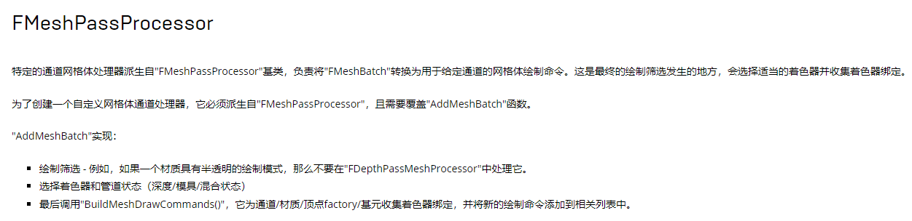
GenerateDynamicMeshDrawCommands()
转换指定EMeshPass中的每个FMeshBatch到一组FMeshDrawCommand。FMeshDrawCommandPassSetupTask要用到。
void GenerateDynamicMeshDrawCommands(){
PassMeshProcessor->AddMeshBatch();
}
FMeshDrawCommand
内有资源绑定信息如着色器绑定(ShaderBindings)、顶点流(VertexStreams)、索引缓冲(IndexBuffer)、PSO管线ID(CachedPipelineId)、绘制参数(FirstIndex、NumPrimitive、NumInstances)等。
FMeshDrawCommand（网格绘制指令），记录了绘制单个Mesh所需的所有资源和数据，且不应该有多余的数据，如果需要在InitView传递数据，可用FVisibleMeshDrawCommand。
FParallelMeshDrawCommandPass & DispatchPassSetup() & DispatchDraw()
Encapsulates two parallel tasks - mesh command setup task and drawing task
DispatchPassSetup() 对应 mesh command setup task
DispatchDraw() 对应 drawing task
同时保存着该pass的meshdrawcommand
RHICommand
RHI全称Rendering Hardware Interface（渲染硬件接口），是不同图形API的抽象层，而RHICommandList便是负责收录与图形API无关的中间层绘制指令和数据。
RHICommandList
RHICommandList收录了一系列中间绘制指令之后，会在RHI线程一一转换到对应目标图形API的接口
RDG
RDG全称是Rendering Dependency Graph，意为渲染依赖性图表，是UE4.22开始引进的全新的渲染子系统，基于有向无环图(Directed Acyclic Graph，DAG)的调度系统，用于执行渲染管线的整帧优化。UE中使用RDG代替原本直接调用RHI命令的方式，由RDG调整资源的生命周期，裁剪Pass，处理Pass的资源转换和屏障，处理异步计算Pass的依赖和引用关系，查找并建立分叉和合并Pass节点，合并所有具体相同渲染目标的光栅化Pass等。
FRDGPass
RDGPass和渲染Pass并非一一对应关系，有可能多个RDGPass合并成一个渲染Pass。